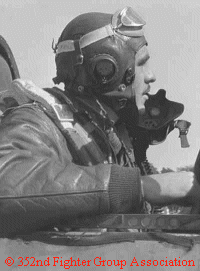
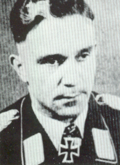
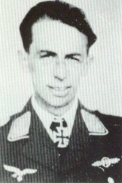
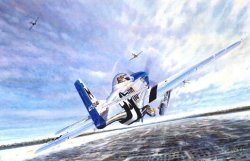

Maj. George Preddy
Highest scoring Mustang Ace of WWII

Major Gunther Specht
Kommodore JG11
KIA in the Battle over Asch

Horst-Gunther von Fassong
Gruppenkommandeur III/JG11
KIA in the Battle over Asch

Lt. Col John Meyer
Commander 487th FS
Recorded two enemy aircraft destroyed in the Battle over Asch
On
January 1st, 1945 the airfield at Asch Belgium (known as Y-29) was the home
of the 366th Fighter Group of the 9th Tactical Air Force and the 352nd
Fighter Group temporarily on loan to the 9th from the 8th Air Force.
The 352nd had been moved to Asch on December 23rd 1944 in response to the
heavy activity of the Luftwaffe in support of the German Ardennes Offensive.
The plan was for the 352nd's Mustangs to fly fighter sweeps to clear the
enemy from the sky and provide top cover for the Thunderbolts attacking
ground targets. These roles provided a bit of irony during the battle
over Asch.
Asch
airfield was a new and unpleasant experience for the pilots of the 352nd.
Used to their home base in Bodney England, they were un-prepared for the
primitive conditions at Asch. Tents heated by oil stoves provided the
only shelter from the frigid Belgium winter and baths were taken either from
a bucket or at a near by minors camp. A single tent served as the HQ,
operations, briefing room, intelligence and supply.
Tragedy
struck the 352nd on their second day at Asch, Christmas day 1944, when an
American anti-aircraft battery inadvertently shot down Maj. George Preddy.
Preddy was the 352nd's leading ace and commander of the 328th Fighter
Squadron. While perusing a FW-190 at tree top-level Preddy was hit by
the anti-aircraft battery when it opened fire on the 190. They
undershot and Preddy's P51 was hit with 2 .50 cal rounds. Mortally
wounded, Preddy crashed into an open field.
The
group rebounded from the primitive conditions at Asch and the loss of George
Preddy in action over Bonn on the 27th of December. The 352nd engaged
a large formation of German fighters claiming 22 enemy aircraft while
sustaining no losses. The 352nd was taking out its misfortunes on the
German Luftwaffe! This was a trend that was to continue.
On December 31st 1945, the 352nd received its orders for the 1st day of the New Year. They were to provide escort for 8th Air Force Bombers on a mission to bomb targets near Berlin. Lt. Col John Meyer, commander of the 487th Fighter Squadron was disappointed with this assignment. He believed that the Germans may try to catch the allies still asleep and hung over from new years celebrations and requested that the 487th be allowed to fly a patrol early in the morning. Command reluctantly agreed on the condition that the 352nd be able to field a full group of 36 fighters for the escort mission.
The
366th also had received their orders for the New Year. The 391st was
to leave early in the morning to attack German armor at Ondenval. Two
flights of the 390th were also scheduled to take off slightly later in the
morning with the same objective. Thus it was that 8 P47's of the 366th
would be circling over Asch, and 12 P51's of the 487th would be on the
flight line as the Luftwaffe approached.
The
Luftwaffe units assigned to attack Asch were the I, II, & III Gruppen of
Jagdgeschwader 11, Commanded by Oberstleutnant Gunther Specht, leader of the
entire Geschwader. The 3 Gruppen of JG11 were stationed at Darmstadt-Griesheim,
Gross-Ostheim and Zellhausen all southwest of Frankfort. 65 FW190's
and Me109's of the three gruppen of JG11 took off from their respective
bases just before 8:30am and formed up over Aschaffenburg, Joining with two
Ju188 pathfinders and headed for Asch. Radio silence and low altitude
were the order of the day.
So
secret was Operation Bodenplatte that the Germans own ground forces were not
notified of the large formations of German fighters that would be flying
overhead. This resulted in at least one casualty for the JG11 as they
were assaulted by friendly fire on their way to Asch. Credit must be
given to the German pilots for not breaking radio silence to call off the
ground fire. On the return trip several more JG11 and many other
German fighters fell to friendly fire before the German guns could be called
off.
As
the JG11 approached Asch, 8 P47's of the 390th were just forming up over
Asch to head out over the Ardennes in search of German armor. As the
390th finished forming up they spotted flak bursts over the Ophoven field.
At this same moment Lt Col. John Meyer was just beginning to roll down the
runway. He also saw the flak bursts and radioed the tower to inquire;
the tower had nothing to report. Heading for Ophoven to investigate,
the 390th was surprised to see a large formation of FW190's and Me109's
approaching Asch from the northeast at 1500 ft. The 8 P47's of the
390th jettisoned their bombs and external tanks and attacked, causing
confusion among the German attackers and breaking up the formation.
This turned out to be a key blow to the JG11, without which the mustangs of
the 487th may not have so easily taken to the air. The 390th claimed 7
enemy aircraft in this attack taking a loss of only one.

The
battle over Asch went on for 30 minutes. 11 pilots of the 487th
claimed 23 victories while sustaining no losses, and just three aircraft
damaged in the air. I will leave the adventures of each pilot to be
told by them through their personal combat logs and memoirs. Please
see the list of pilots below and follow the link to each pilot to see their
picture and read their story. Please understand that I have not yet
found all of the pilot's pictures, combat logs or memoirs. I will
continue the search for as long as it takes. If you know of where I
might locate some of this missing information please let me know.
Flight Position Pilot
White 1 Lt.Col John C. Meyer
White 2 Capt. Alex F. Sears
White 3 Capt Raymond H. Lettge
White 4 Lt. Alden P. Rigby
Yellow 1 Lt. Col William T. Halton
Yellow 2 Capt. Henry M Stewart
Yellow 3 Capt. Sanford Moats
Yellow 4 Lt. Dean Huston
Red 1 Cpt. William Whisner
Red 2 Lt. Walter G. Diamond
Red 3 Lt. Nelson R. Jesup
Red 4 Lt. William C. Miller
The 390th and 487th defended the airbase at Asch so well that only one Mustang was damaged on the ground and no casualties were reported. The actions of the 487th in taking off under fire and performing so well at such a disadvantage earned the unit the only Distinguished Unit Citation given to a fighter squadron in the Northwestern European theater of operation.
The total estimated losses of the JG11 range from 24 to 40. Given the credited victories of the 487th (23), 390th (7), 391st (2), and ground gunners (7) along with at least one aircraft destroyed by friendly flak in route, the number of 40 seems to hold up. However, there was undoubtedly some double counting of victories claimed and some victories that were not confirmed. But more Important then the numbers was the loss of experienced Luftwaffe leaders and pilots. None of JG11's flight leaders returned from this mission.